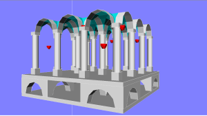
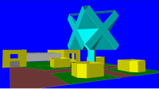
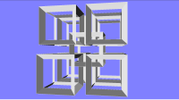
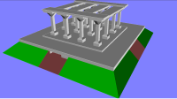
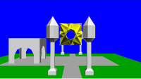
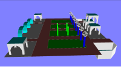
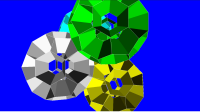
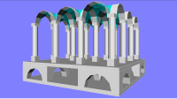

MKI SEARCHING GAME

Simple WebGl game written by M.Kik.
Note: There are also versions available as
Android application on Google Play
and
Chrome application in Chrome Web Store
.
Instructions
Goal of the game
Your task is to find and collect tokens randomly scattered in a 3D stage.
How to play
To collect a token you have simply to approach it.
You can go through the walls like a ghost.
Your position can be modified by the following actions:
- UP
- - moving or rotating upward (depending on the mode)
- DOWN
- - moving or rotating downward (depending on the mode)
- LEFT
- - moving or rotating leftward (depending on the mode)
- RIGHT
- - moving or rotating rightward (depending on the mode)
- FORWARD
- - moving forward
- BACK
- - moving backward
- MOVE
- - switch the mode to: 'moving'
- ROTATE
- - switch the mode to: 'rotating'
- LEVEL
- - set the observer upright
You can use a keyboard or touch/click sectors of the screen.
The following keys activate actions:
- 'M'
- - MOVE
- 'R'
- - ROTATE
- UpArrow
- - UP
- DownArrow
- - DOWN
- LeftArrow
- - LEFT
- RightArrow
- - RIGHT
- 'F'
- - FORWARD
- 'B'
- - BACK
- Space
- - LEVEL
If you do not have any keyboard (i.e. on tablet), then you can touch or click distinct areas of the screen.
The screen is divided into 3x3 sectors that activate actions according to the following scheme:
| MOVE | UP | FORWARD |
| LEFT | LEVEL | RIGHT |
| ROTATE | DOWN | BACK |
Hints
- If you are using touch/click-screen method,
then the movement/rotation is started by one click, and any other click anywhere on the screen stops this action.
If you want to switch to moving/rotating you may need to click/touch the sector twice as the the first clicking/touching may be used
for stopping movement/rotation.
- If you see nothing and you have lost your orientation in the space, then switch to rotating mode and start to rotate in either left or right (in one directions). Soon you should see at least a line of the frame box surrounding the stage.
- If you are close to the token to be collected and you are using touch/click-screen method, then it is better to use 'rotating mode',
since the up/down/left/right movements may be too fast.
- Not all browsers on the tablets support WebGl. I have checked that it works fine on Firefox on my tablet.
Available stages
Start the game by clicking on one of the following stages:







Project site
You can find this project
on my GitHub account